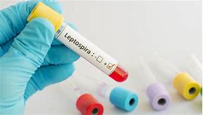

12 sintomas de leptospirose (e o que fazer)
Os principais sintomas de leptospirose são dor abdominal, mal-estar, dores no corpo, febre alta, dor de cabeça intensa, diarreia e vômitos. Além disso, algumas pessoas também podem apresentar pequenas manchas vermelhas ou roxas na pele e céu da boca.
A leptospirose é uma doença infecciosa causada pelo contato direto ou indireto com a urina de animais infectados pela bactéria Leptospira, como ratos, principalmente, cães e gatos. Entenda melhor como se pega a leptospirose.
Em casos de suspeita de leptospirose, deve-se consultar o infectologista ou clínico geral, para fazer uma avaliação completa e, se necessário, recomendar o tratamento adequado, que pode ser feito com o uso de medicamentos, hidratação e, em alguns casos, a diálise peritoneal.

Principais sintomas
Os principais sintomas de leptospirose em humanos são;
1. Dor abdominal;
2. Mal-estar;
3. Olhos vermelhos;
4.Dores do corpo, principalmente na panturrilha, costas e abdômen;
5. Febre alta, que começa de repente;
6. Dor de cabeça intensa;
7. Diarreia;
8. Vômito;
9. Calafrios;
10. Cansaço;
11. Tosse;
12. Náuseas.
Além disso, entre 3 a 7 dias após o início dos sintomas, pode surgir a doença de Weil, que corresponde aos três sintomas que surgem juntos e que podem indicar maior gravidade da doença, incluindo olhos e pele amarelados, insuficiência renal e hemorragias, principalmente pulmonares.
Sintomas de leptospirose na pele
Os sintomas de leptospirose na pele são vermelhidão na conjuntiva dos olhos, que é a membrana fina e transparente que cobre a parte branca do olho, principalmente no início da doença.
Além disso, em alguns casos, a pessoa também pode apresentar pequenas manchas vermelhas, roxas ou marrons na pele e no céu da boca, e que duram menos de 24 horas.
Já nos casos mais graves da leptospirose, a pessoa pode apresentar pele e olhos amarelados e manchas roxas em grande parte do corpo.
Como saber se é leptospirose
Para saber se é leptospirose, deve-se consultar o infectologista ou clínico geral, para que seja feita uma avaliação dos sinais e sintomas apresentados, e do histórico de saúde da pessoa.

Se deseja avaliar o risco de leptospirose, marque uma consulta com o especialista mais perto de você:
Para confirmar o diagnóstico, o médico solicita o exame de sangue para verificar a presença de anticorpos para a leptospirose ou da bactéria Leptospira, incluindo o método de cultura ou ELISA. Além disso, o médico também pede o hemograma completo, a radiografia de tórax, o eletrocardiograma e a gasometria arterial.
O que fazer
O tratamento para leptospirose varia conforme a gravidade da doença e inclui o uso de medicamentos, hidratação e diálise peritoneal.
1. Medicamentos
Antibióticos orais como penicilina, doxiciclina oral, estreptomicina, cloranfenicol e eritromicina, são alguns dos medicamentos que podem ser recomendados pelo médico para tratar a leptospirose.
Analgésicos e antitérmicos, como paracetamol e dipirona, podem ser indicados para controlar a febre e as dores. Além disso, a metoclopramida é um antiemético que também pode ser indicado para aliviar as náuseas e vômitos.
2. Hidratação
A hidratação é recomendada, pois a leptospirose pode provocar vômitos e diarreia, causando a desidratação e levando ao surgimento de outros sintomas, como pouca urina, cãibras e tontura.
A hidratação pode ser feita com o aumento da ingestão de água filtrada ou fervida, água de coco, chás, soro caseiro ou sais de reidratação oral, por exemplo.
3. Diálise peritoneal
A diálise peritoneal, junto com o uso de antibióticos, tem sido usada para tratar insuficiência hepática e renal grave em pessoas com leptospirose.

A diálise peritoneal é um tratamento que tem o objetivo de filtrar o sangue e eliminar as toxinas acumuladas no organismo quando os rins não funcionam corretamente. Nesse tratamento, usa-se uma solução de diálise, que fica em uma bolsa, que passa para o peritônio através de um cateter que é colocado no abdômen.
A leptospirose tem cura?
Sim, a leptospirose tem cura, principalmente quando essa doença é diagnosticada e tratada adequadamente na fase inicial.